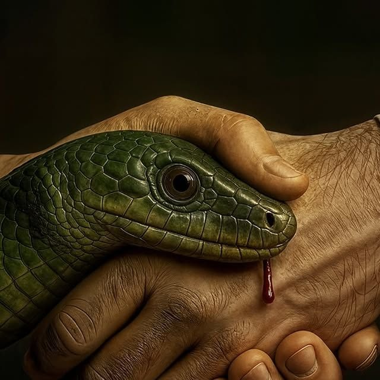
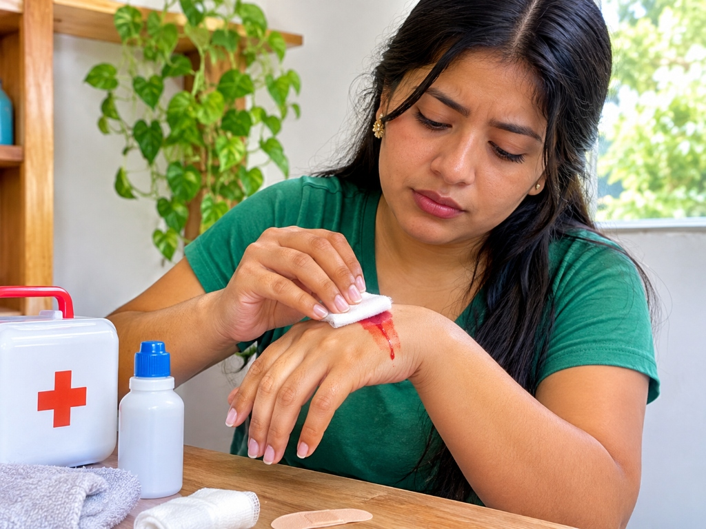
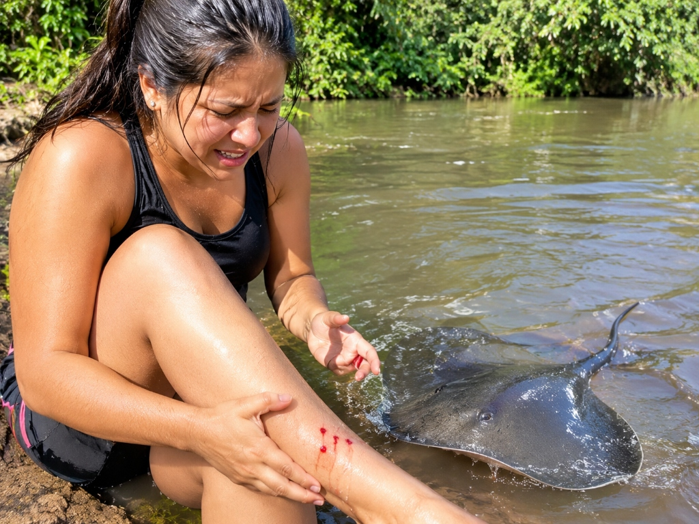

PROTOCOLO MÉDICO VERIFICADO
Título
Subtítulo
Orientación médica inmediata ante mordeduras, fiebres y heridas, combinada con la sabiduría botánica de nuestras plantas amazónicas y cálculo exacto de navegación hacia la posta más cercana.
Monitoreo en tiempo real de postas e insumos en Loreto
Protocolos paso a paso sobre qué hacer y qué NUNCA hacer mientras se organiza el traslado a la posta médica.


Toca cualquier tarjeta para abrir el protocolo médico con voz guiada sin conexión.
Jergón, shushupe y traslado con suero.
Manejo térmico y prevención hemorrágica.
Presión continua y vendaje en chacra.
Fórmula de rehidratación oral infantil.

Inmersión en agua caliente para alivio.
Sangre de grado, matico y uña de gato.
Calcula con precisión las horas y minutos de navegación según tu río, embarcación y corriente para llegar a tiempo a la posta con suero y oxígeno.
Destino: C.S. Santa Clotilde (I-4) (~45 km)
Fichas prácticas de plantas medicinales locales con modo de preparación seguro y advertencia sobre cuándo es obligatorio acudir al médico.